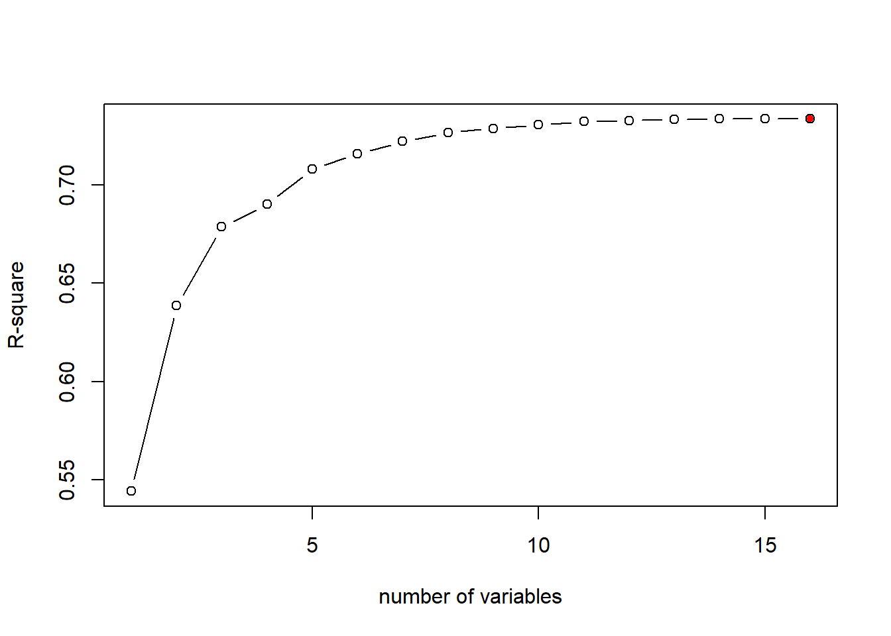
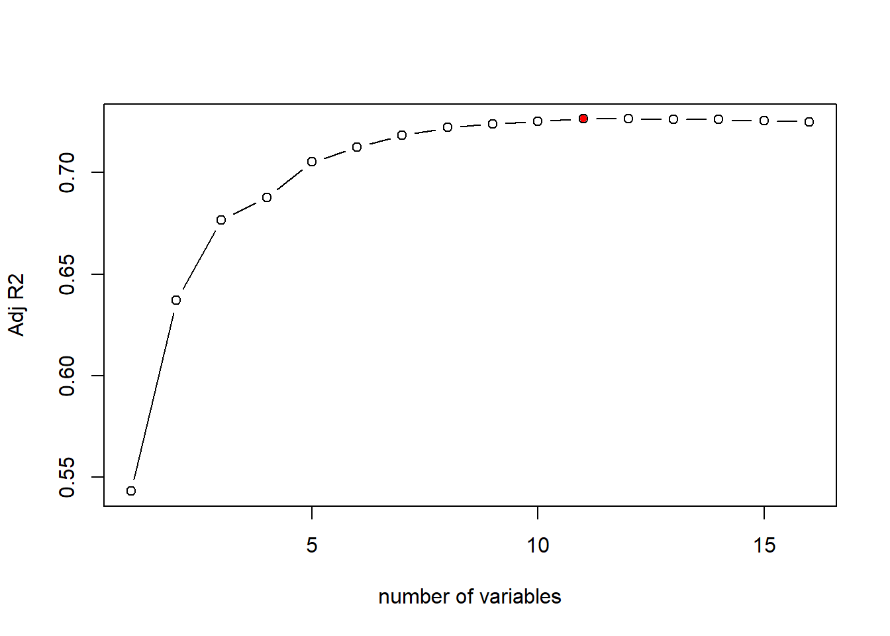
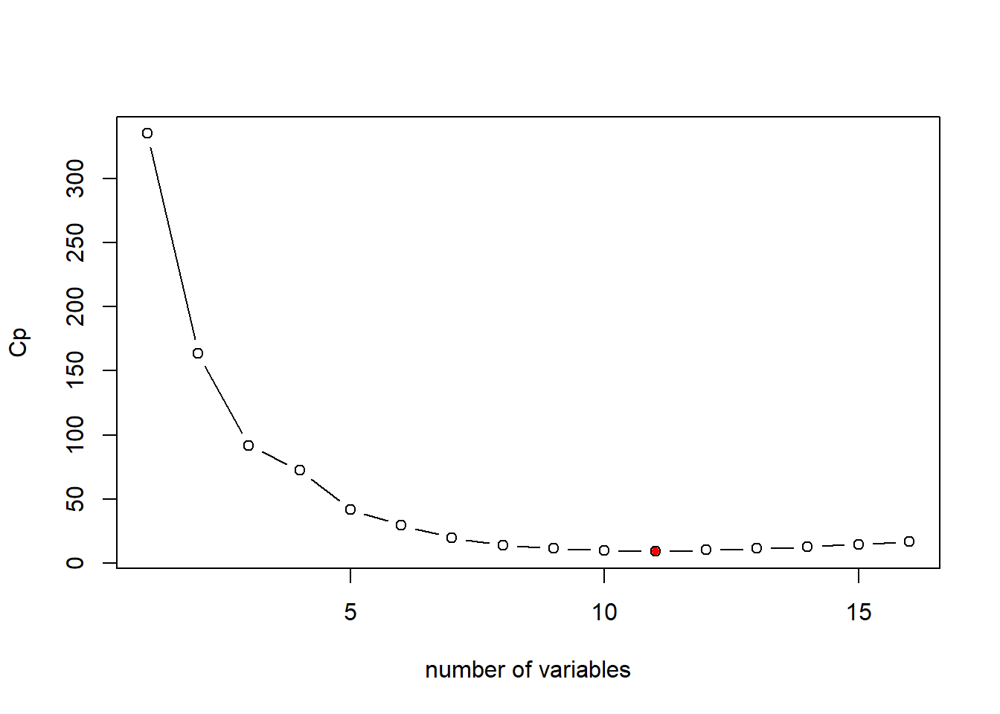
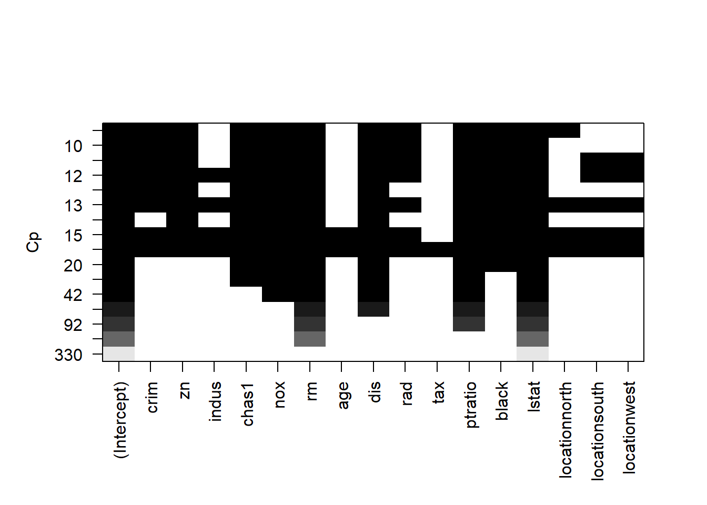
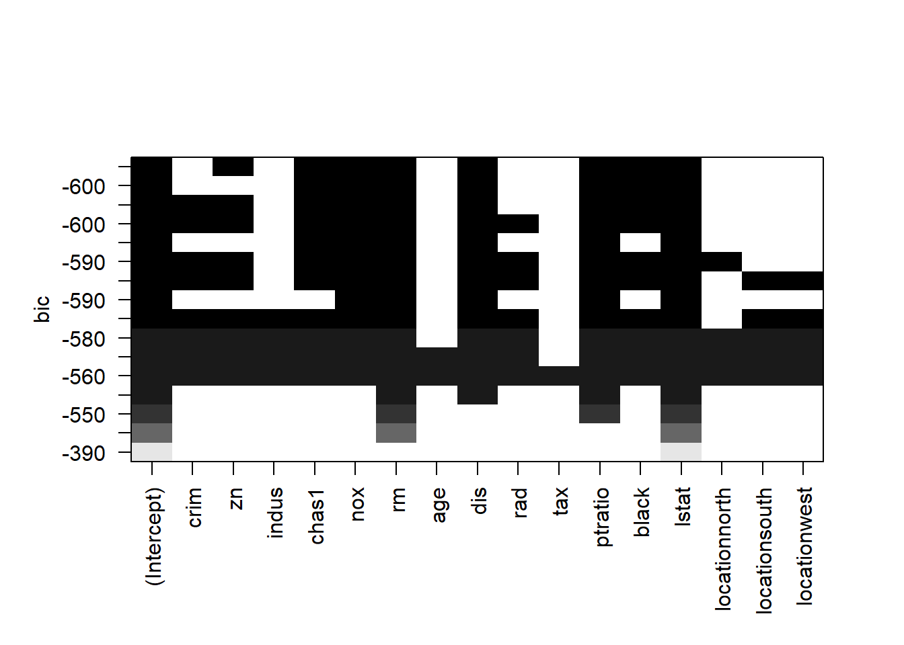
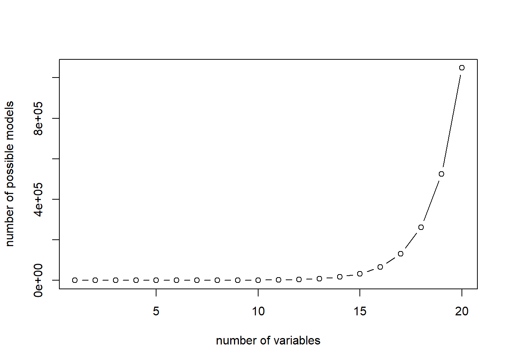
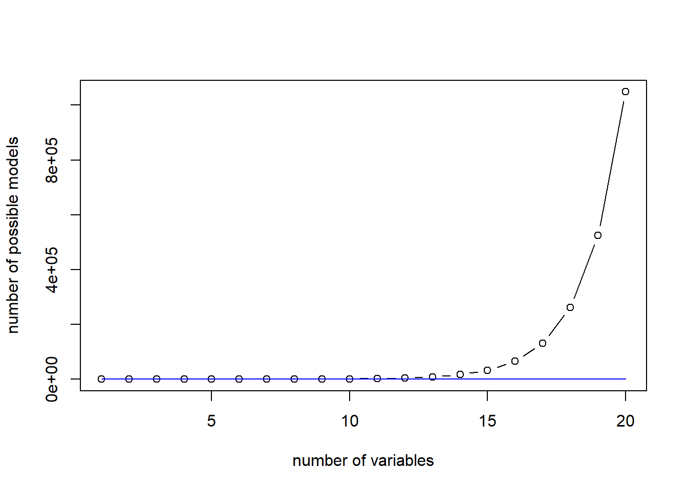
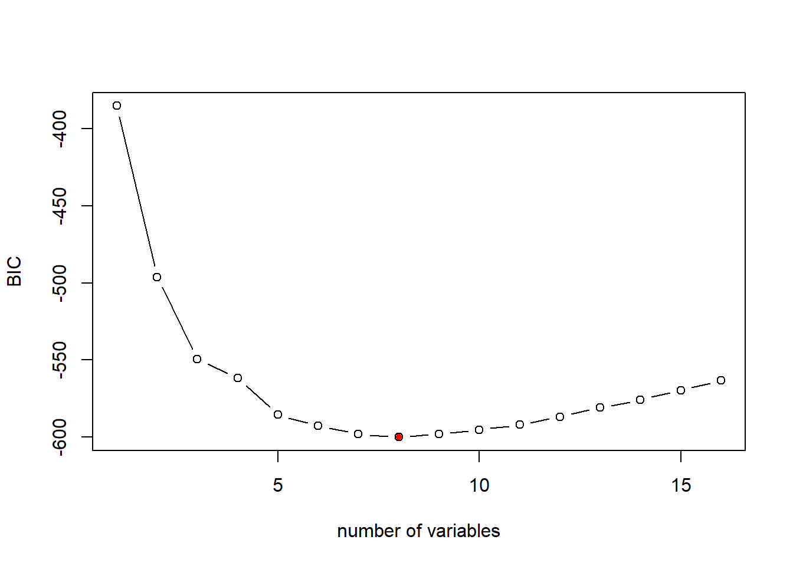

Chapter 21 Best Subset Model Selection
So far, we have built many different models to predict Boston house price. For any given house, each model predicts a different medv. You must be wondering: which model should I trust and use eventually?
Today, we will learn the technique to select the “best” models.
We will continue to use the Boston house dataset for illustration for consistence. The Boston dataset has 14 independent variables and 1 dependent variable.
Boston=fread("data/Boston.csv")
Boston[,location:=factor(location)]
Boston[,chas:=factor(chas)]
dim(Boston)## [1] 506 15Each variable can be either included or not included in the model. Accordingly, we will have \(2^14\) number of possible models. The goal of model selection is to determine which subset of variable should be used for the linear regression model to predict medv.
In general, suppose we have p independent variable, \[y=\beta_0+ \beta_1x_1+ ...+\beta_p*x_p + \epsilon\] It is not necessarily the best to include all \(x_1, ...x_p\) into the model due to potential irrelevant variable or multicollinearity. Therefore, there are together \(2^p\) model candidate because each variable can be included or not included. Our task is find the best one!
This seems an impossible mission. But, with the R Package “leaps”, we can perform an exhaustive search for all the \(2^p\) model candidate and identify the the best subsets of x-variables for predicting y. This package is developed by Thomas Lumley, a statistical professor at University of Auckland.
Install the “leaps” package.
Load the package into R:
## Warning: package 'leaps' was built under R version 4.0.521.1 Best Subset Model Selection
Best subset regression algorithm exhausts all the \(2^p\) combination to find the best model for each model size of \(d=1,2.., p\).
To be specific, for model size of 1 (only 1 x-variable will be included), the algorithm will return the best one variable to predict y-variable; for model size of 2 (2 x-variables will be included), the algorithm will return the best two variables to predict y-variable…
Here is the R code for best subset regression:
## Subset selection object
## Call: regsubsets.formula(medv ~ ., data = Boston, nvmax = 18)
## 16 Variables (and intercept)
## Forced in Forced out
## crim FALSE FALSE
## zn FALSE FALSE
## indus FALSE FALSE
## chas1 FALSE FALSE
## nox FALSE FALSE
## rm FALSE FALSE
## age FALSE FALSE
## dis FALSE FALSE
## rad FALSE FALSE
## tax FALSE FALSE
## ptratio FALSE FALSE
## black FALSE FALSE
## lstat FALSE FALSE
## locationnorth FALSE FALSE
## locationsouth FALSE FALSE
## locationwest FALSE FALSE
## 1 subsets of each size up to 16
## Selection Algorithm: exhaustiveHere nvmax sets the maximum number of variable to include. We set nvmax =16 or larger since we have 14 independent variable (R will automatically define 3 location dummies).
use summary() to get a quick summary of the regression results
## Subset selection object
## Call: regsubsets.formula(medv ~ ., data = Boston, nvmax = 18)
## 16 Variables (and intercept)
## Forced in Forced out
## crim FALSE FALSE
## zn FALSE FALSE
## indus FALSE FALSE
## chas1 FALSE FALSE
## nox FALSE FALSE
## rm FALSE FALSE
## age FALSE FALSE
## dis FALSE FALSE
## rad FALSE FALSE
## tax FALSE FALSE
## ptratio FALSE FALSE
## black FALSE FALSE
## lstat FALSE FALSE
## locationnorth FALSE FALSE
## locationsouth FALSE FALSE
## locationwest FALSE FALSE
## 1 subsets of each size up to 16
## Selection Algorithm: exhaustive
## crim zn indus chas1 nox rm age dis rad tax ptratio black lstat
## 1 ( 1 ) " " " " " " " " " " " " " " " " " " " " " " " " "*"
## 2 ( 1 ) " " " " " " " " " " "*" " " " " " " " " " " " " "*"
## 3 ( 1 ) " " " " " " " " " " "*" " " " " " " " " "*" " " "*"
## 4 ( 1 ) " " " " " " " " " " "*" " " "*" " " " " "*" " " "*"
## 5 ( 1 ) " " " " " " " " "*" "*" " " "*" " " " " "*" " " "*"
## 6 ( 1 ) " " " " " " "*" "*" "*" " " "*" " " " " "*" " " "*"
## 7 ( 1 ) " " " " " " "*" "*" "*" " " "*" " " " " "*" "*" "*"
## 8 ( 1 ) " " "*" " " "*" "*" "*" " " "*" " " " " "*" "*" "*"
## 9 ( 1 ) "*" "*" " " "*" "*" "*" " " "*" " " " " "*" "*" "*"
## 10 ( 1 ) "*" "*" " " "*" "*" "*" " " "*" "*" " " "*" "*" "*"
## 11 ( 1 ) "*" "*" " " "*" "*" "*" " " "*" "*" " " "*" "*" "*"
## 12 ( 1 ) "*" "*" " " "*" "*" "*" " " "*" "*" " " "*" "*" "*"
## 13 ( 1 ) "*" "*" "*" "*" "*" "*" " " "*" "*" " " "*" "*" "*"
## 14 ( 1 ) "*" "*" "*" "*" "*" "*" " " "*" "*" " " "*" "*" "*"
## 15 ( 1 ) "*" "*" "*" "*" "*" "*" "*" "*" "*" " " "*" "*" "*"
## 16 ( 1 ) "*" "*" "*" "*" "*" "*" "*" "*" "*" "*" "*" "*" "*"
## locationnorth locationsouth locationwest
## 1 ( 1 ) " " " " " "
## 2 ( 1 ) " " " " " "
## 3 ( 1 ) " " " " " "
## 4 ( 1 ) " " " " " "
## 5 ( 1 ) " " " " " "
## 6 ( 1 ) " " " " " "
## 7 ( 1 ) " " " " " "
## 8 ( 1 ) " " " " " "
## 9 ( 1 ) " " " " " "
## 10 ( 1 ) " " " " " "
## 11 ( 1 ) "*" " " " "
## 12 ( 1 ) " " "*" "*"
## 13 ( 1 ) " " "*" "*"
## 14 ( 1 ) "*" "*" "*"
## 15 ( 1 ) "*" "*" "*"
## 16 ( 1 ) "*" "*" "*"Here summary() reports the best subset of variables for each model size. Here is how we read the output report: each row represents a model (with the row ID correponsonds size of the model), an asterisk specifies that the variable is included in the corresponding model. E.g., when n=1 (model with only 1 variables), the best variable to include is lstat; when n=2 (model with two variables), the best variables to include is lstat and rm; and so on so forth.
Thus, we have narrowed down from \(2^p\) possible models to 16 models with distinct model sizes.
21.2 Deterimining the best model with adj-R2, Cp, AIC, and BIC
Now, the question is to pin down the best model among the remaining 16 models. We will discuss the three measures (i.e., adj-R2, Cp, and BIC) for selecting the best model. These three metrics measure how good the model is in fitting the data while penalizing the complexity of the model.
bestFit_sum is a list that contains these measures (i.e., adj-R2, Cp, and BIC). Let’s first examine the objects in the list:
## [1] "which" "rsq" "rss" "adjr2" "cp" "bic" "outmat" "obj"21.2.1 R-squared is not a good criteria for model selection
As mentioned previously, R-sq always inreases as more variables are included in the model. We can plot the R-sq of the 16 models to demonstrate that:
plot(bestFit_sum$rsq, xlab = "number of variables", ylab="R-square", type="b")
# return the model index of maximum R-sq
opt_id=which.max(bestFit_sum$rsq)
# add the maximum R-sq on the plot
points(opt_id,bestFit_sum$rsq[opt_id],pch=20,col="red")
The above chart shows that R-sq always favor model with larger number of variables, i.e., the model with all independent variables included. As mentioned, this is not always the best because some variables may be totally irrelevant or cause multicollinearity issue.
21.2.2 Select the best model using Adjusted R2
As mentioned, R-squared always increases as more independent variables are included in the model. Adjusted R-squared, instead, will penalize the model complexity. Adding irrelevant independent variables increases R-squared, but will lower adjusted R-squared.
The formula for adj-R2 is \[AdjR2=1-(1-R2)\frac{n-1}{n-d-1}\] Here R2 is the R-squared, n is the sample size, and d is the number of predictors. Keeping everything the same, as d increases, Adj-R2 will decreases; thus Adj-R2 will penalize the complexity of the model. A higher Adj-R2 means a better model.
Let’s plot the adj-R2 for different model from the best subset regression result:
# plot the Adj-R2 for different models of size 1 to 16
plot(bestFit_sum$adjr2,xlab="number of variables",ylab="Adj R2",type="b")
# return the model index of maximum adj-R2
opt_id=which.max(bestFit_sum$adjr2)
points(opt_id,bestFit_sum$adjr2[opt_id],pch=20,col="red")
As the above plot shows, according to adj-R2, the best model is the 11th model, i.e., the model with 11 independent variables. We can check the variables and estiamted coefficients of the best model as below:
## (Intercept) crim zn chas1 nox
## 27.996958891 -0.067235171 0.043898771 2.994908911 -17.389642253
## rm dis rad ptratio black
## 4.158308888 -1.438223278 0.404644153 -0.827872396 0.008366116
## lstat locationnorth
## -0.524336874 0.84258827021.2.3 Select the best model using Cp
Mallows’s Cp is another commonly used metric to assess the fit of a linear regression model. A smaller value of Cp means that the model is relatively precise and thus a better model. \[ Cp=\frac{1}{n}(RSS+2d\hat{\sigma}^2)\] where \(\hat{\sigma}^2\) refers to the estimated variance of residual when all predictors are included. This terms represents the penality to the model complexity (i.e., Cp increases as \(d\) increases).
# plot the Cp for different models of size 1 to 16
plot(bestFit_sum$cp, xlab="number of variables",ylab="Cp",type="b")
# return the index of minimum Cp
opt_id=which.min(bestFit_sum$cp)
points(opt_id,bestFit_sum$cp[opt_id],pch=20, col="red") In this case, the Cp measure suggests the same model as adj-R2: the model with 11 variables.
The AIC (Akaike information criterion) is other commonly used criterion for model selection. In the case of the best subset linear regression model, the formula for AIC is as below: \[AIC = \frac{1}{n\hat{\sigma}^2}(RSS+2d\hat{\sigma}^2)\] As seen, the AIC (Akaike information criterion) criterion is proportional to Cp. Thus, will yeild the same model selection as Cp.
21.2.4 Select the best model using BIC
BIC (Bayesian Information Criterion) is another commonly used measure to select model. The lower BIC means a better model.
The formula to calcuate BIC for linear regression model is as follow: \[BIC=\frac{1}{n}(RSS+log(n)d\hat{\sigma}^2)\] where \(n\) is the number of observation in the estiamtion dataset, \(d\) is the number of predictors in the model, and log() is the natural logarithm. Notice that BIC replaces the \(2d\hat{\sigma}^2\) used by Cp with a \(log(n)d\hat{\sigma}^2\) term, where n is the number of observations. Since \(log(n)\)>2 for any \(n>7\), the BIC generally places a heavier penalty on models with more variables, and hence results in the selection of smaller models than Cp.
# plot the BIC for different models of size 1 to 16
plot(bestFit_sum$bic,xlab="number of variables",ylab="BIC",type="b")
# return the index of minimum BIC
opt_id=which.min(bestFit_sum$bic)
points(opt_id,bestFit_sum$bic[opt_id],pch=20,col="red")As mentioned, the BIC is more aggregative in penalizing model complexity. Thus, BIC suggests a simpler model with 8 variables. We can examine the resulting model as below:
## (Intercept) zn chas1 nox rm
## 30.316950269 0.037808067 3.111061718 -16.687427958 4.116082349
## dis ptratio black lstat
## -1.382714038 -0.881851067 0.009403764 -0.543125369Another way to examine the Adj-R2/Cp/BIC measure for different model size as well as the variable in the models is through the following plot:

Here is how to read the plot: Each rows represents a model; if the variable is blank on that row, then the variable is not included in that model. The y-axis corresponds the adj-R2 for that model. The best model is the one with highest adj-R2, i.e., the top row.
We can create the same plot with Cp on the y-axis.

Similarly, each rows represents a model; if the variable is blank on that row, then the variable is not included in that model. The y-axis corresponds the Cp for that model. The best model is the one with lowest Cp, i.e., the top row.
We can create the same plot with BIC on the y-axis.

Similarly, each rows represents a model; if the variable is blank on that row, then the variable is not included in that model. The y-axis corresponds the BIC for that model. The best model is the one with lowest Cp, i.e., the top row. As seen, the BIC suggests a simpler model than adj-R2 and Cp do.
Let’s summerize. For a dataset with p predictors, there are \(2^p\) possible model combination. We use the best subset regression to narrow down to \(p\) possible models. Each of these \(p\) models corresponds to a distinct model size from \(d=1, 2,..., p\). It is not always true that the model with most variables is the best because some variables may be irrelevant or cause multicollinearity (meaning the variation in these variables has been captured by the other variables). We can use Adj-R2, Cp, and BIC to select the best model. BIC would penalize the model complexity more aggressively and thus resulting simpler model.
Utimately, it is your call to go with which model (a taste of combination of science and art). I would prefer a simpler model (model suggests by BIC) due to its simplicity.
## (Intercept) zn chas1 nox rm
## 30.316950269 0.037808067 3.111061718 -16.687427958 4.116082349
## dis ptratio black lstat
## -1.382714038 -0.881851067 0.009403764 -0.54312536921.3 Forward/Backward selection
The best subset algorithm does not scale up very well, thus limits its application. As \(p\) goes up, the number of models need to be estimated (i.e., \(2^p\)) increases exponentially. Especially when your dataset has many rows, evaluating one single model takes much time and computing power.
The plot shows the number of linear models to be estimated for best subset algorithm:

Two heuristics are typically used as a compromise: forward selection and backward selection.
Forward selection will add variable sequentially: it starts with adding the one independent variable that fit the data best; the variable will always be kept and then adding the second independent variables which together fit the data best; then the third, …
The Forward selection only requires estimating \(p^2\) models and thus can be scale up well. Here is a comparison between The plot shows the number of linear models to be estimated for best subset and forward selection algorithm:
plot(c(1:20),2^c(1:20), type="b", xlab = "number of variables", ylab="number of possible models")
lines(c(1:20),c(1:20)^2, col="blue")
Now, let’s see how Forward selection works in R.
fwd_fit=regsubsets(medv~., data=Boston, nvmax=18, method="forward")
fwd_fit_sum=summary(fwd_fit)
fwd_fit_sum## Subset selection object
## Call: regsubsets.formula(medv ~ ., data = Boston, nvmax = 18, method = "forward")
## 16 Variables (and intercept)
## Forced in Forced out
## crim FALSE FALSE
## zn FALSE FALSE
## indus FALSE FALSE
## chas1 FALSE FALSE
## nox FALSE FALSE
## rm FALSE FALSE
## age FALSE FALSE
## dis FALSE FALSE
## rad FALSE FALSE
## tax FALSE FALSE
## ptratio FALSE FALSE
## black FALSE FALSE
## lstat FALSE FALSE
## locationnorth FALSE FALSE
## locationsouth FALSE FALSE
## locationwest FALSE FALSE
## 1 subsets of each size up to 16
## Selection Algorithm: forward
## crim zn indus chas1 nox rm age dis rad tax ptratio black lstat
## 1 ( 1 ) " " " " " " " " " " " " " " " " " " " " " " " " "*"
## 2 ( 1 ) " " " " " " " " " " "*" " " " " " " " " " " " " "*"
## 3 ( 1 ) " " " " " " " " " " "*" " " " " " " " " "*" " " "*"
## 4 ( 1 ) " " " " " " " " " " "*" " " "*" " " " " "*" " " "*"
## 5 ( 1 ) " " " " " " " " "*" "*" " " "*" " " " " "*" " " "*"
## 6 ( 1 ) " " " " " " "*" "*" "*" " " "*" " " " " "*" " " "*"
## 7 ( 1 ) " " " " " " "*" "*" "*" " " "*" " " " " "*" "*" "*"
## 8 ( 1 ) " " "*" " " "*" "*" "*" " " "*" " " " " "*" "*" "*"
## 9 ( 1 ) "*" "*" " " "*" "*" "*" " " "*" " " " " "*" "*" "*"
## 10 ( 1 ) "*" "*" " " "*" "*" "*" " " "*" "*" " " "*" "*" "*"
## 11 ( 1 ) "*" "*" " " "*" "*" "*" " " "*" "*" " " "*" "*" "*"
## 12 ( 1 ) "*" "*" "*" "*" "*" "*" " " "*" "*" " " "*" "*" "*"
## 13 ( 1 ) "*" "*" "*" "*" "*" "*" " " "*" "*" " " "*" "*" "*"
## 14 ( 1 ) "*" "*" "*" "*" "*" "*" " " "*" "*" " " "*" "*" "*"
## 15 ( 1 ) "*" "*" "*" "*" "*" "*" "*" "*" "*" " " "*" "*" "*"
## 16 ( 1 ) "*" "*" "*" "*" "*" "*" "*" "*" "*" "*" "*" "*" "*"
## locationnorth locationsouth locationwest
## 1 ( 1 ) " " " " " "
## 2 ( 1 ) " " " " " "
## 3 ( 1 ) " " " " " "
## 4 ( 1 ) " " " " " "
## 5 ( 1 ) " " " " " "
## 6 ( 1 ) " " " " " "
## 7 ( 1 ) " " " " " "
## 8 ( 1 ) " " " " " "
## 9 ( 1 ) " " " " " "
## 10 ( 1 ) " " " " " "
## 11 ( 1 ) "*" " " " "
## 12 ( 1 ) "*" " " " "
## 13 ( 1 ) "*" "*" " "
## 14 ( 1 ) "*" "*" "*"
## 15 ( 1 ) "*" "*" "*"
## 16 ( 1 ) "*" "*" "*"summary() reports the best set of variables for each model size. Each row represents a model (with the row ID correponsonds size of the model), an asterisk specifies that a given variable is included in the corresponding model. When n=1 (i.e., model with only 1 variables), lstat is added to the model, and will not be removed in the remaining process; When n=2 (i.e., model with only 2 variables), rm is added to the model and will remain in the model in the remaining process; and so on so forth.
Now, we have successfully narrowed down to the 16 different models with distinct size. Again, we can use adj-R2, Cp or BIC to select the best model.

# plot the Cp for different models of size 1 to 16
plot(fwd_fit_sum$bic,xlab="number of variables",ylab="BIC",type="b")
# return the index of minimum BIC
opt_id=which.min(fwd_fit_sum$bic)
points(opt_id,fwd_fit_sum$bic[opt_id],pch=20,col="red")
## (Intercept) zn chas1 nox rm
## 30.316950269 0.037808067 3.111061718 -16.687427958 4.116082349
## dis ptratio black lstat
## -1.382714038 -0.881851067 0.009403764 -0.543125369We can also select the best model based on Cp or Adj-R2.
It is a common mistake to confuse the model fit results (e.g., fwd_fit) and its summary (e.g., fwd_fit_sum). One quick way to help you remember when to use fwd_fit and when to use fwd_fit_sum is: fwd_fit saves the models themselves and fwd_fit_sum saves the how good these models are. Thus, when we need to retrieve coefficients information, we use fwd_fit; and when we want to retrieve R2, adj-R2, Cp and BIC, we use fwd_fit_sum.
Backward selection is the reverse of forward selection: all variables are included in the model first, and the variables are removed sequentially to reduce the model complexity. The foreward/backward selection is essentially the same, and we can simply use forward selection.
Note that there is one situation that we should not use backward selection: number of rows is less than number of variables (because including all variables will not be feasible because the resulting model cannot be estimated).
back_fit=regsubsets(medv~., data=Boston, nvmax=18, method="backward")
back_fit_sum=summary(back_fit)
back_fit_sum## Subset selection object
## Call: regsubsets.formula(medv ~ ., data = Boston, nvmax = 18, method = "backward")
## 16 Variables (and intercept)
## Forced in Forced out
## crim FALSE FALSE
## zn FALSE FALSE
## indus FALSE FALSE
## chas1 FALSE FALSE
## nox FALSE FALSE
## rm FALSE FALSE
## age FALSE FALSE
## dis FALSE FALSE
## rad FALSE FALSE
## tax FALSE FALSE
## ptratio FALSE FALSE
## black FALSE FALSE
## lstat FALSE FALSE
## locationnorth FALSE FALSE
## locationsouth FALSE FALSE
## locationwest FALSE FALSE
## 1 subsets of each size up to 16
## Selection Algorithm: backward
## crim zn indus chas1 nox rm age dis rad tax ptratio black lstat
## 1 ( 1 ) " " " " " " " " " " " " " " " " " " " " " " " " "*"
## 2 ( 1 ) " " " " " " " " " " "*" " " " " " " " " " " " " "*"
## 3 ( 1 ) " " " " " " " " " " "*" " " " " " " " " "*" " " "*"
## 4 ( 1 ) " " " " " " " " " " "*" " " "*" " " " " "*" " " "*"
## 5 ( 1 ) " " " " " " " " "*" "*" " " "*" " " " " "*" " " "*"
## 6 ( 1 ) " " " " " " "*" "*" "*" " " "*" " " " " "*" " " "*"
## 7 ( 1 ) " " " " " " "*" "*" "*" " " "*" " " " " "*" "*" "*"
## 8 ( 1 ) " " "*" " " "*" "*" "*" " " "*" " " " " "*" "*" "*"
## 9 ( 1 ) "*" "*" " " "*" "*" "*" " " "*" " " " " "*" "*" "*"
## 10 ( 1 ) "*" "*" " " "*" "*" "*" " " "*" "*" " " "*" "*" "*"
## 11 ( 1 ) "*" "*" " " "*" "*" "*" " " "*" "*" " " "*" "*" "*"
## 12 ( 1 ) "*" "*" " " "*" "*" "*" " " "*" "*" " " "*" "*" "*"
## 13 ( 1 ) "*" "*" "*" "*" "*" "*" " " "*" "*" " " "*" "*" "*"
## 14 ( 1 ) "*" "*" "*" "*" "*" "*" " " "*" "*" " " "*" "*" "*"
## 15 ( 1 ) "*" "*" "*" "*" "*" "*" "*" "*" "*" " " "*" "*" "*"
## 16 ( 1 ) "*" "*" "*" "*" "*" "*" "*" "*" "*" "*" "*" "*" "*"
## locationnorth locationsouth locationwest
## 1 ( 1 ) " " " " " "
## 2 ( 1 ) " " " " " "
## 3 ( 1 ) " " " " " "
## 4 ( 1 ) " " " " " "
## 5 ( 1 ) " " " " " "
## 6 ( 1 ) " " " " " "
## 7 ( 1 ) " " " " " "
## 8 ( 1 ) " " " " " "
## 9 ( 1 ) " " " " " "
## 10 ( 1 ) " " " " " "
## 11 ( 1 ) " " " " "*"
## 12 ( 1 ) " " "*" "*"
## 13 ( 1 ) " " "*" "*"
## 14 ( 1 ) "*" "*" "*"
## 15 ( 1 ) "*" "*" "*"
## 16 ( 1 ) "*" "*" "*"21.4 Summary:
- It is not always best to include every variable into the linear regression model. We need to select the best subset of variables to include.
- Best subset algoirthm exhausts every possible combination to select the best model of each size.
- We can use adj-R2, Cp, AIC, and BIC to select the best model from the output of the best subset regression. A model with higher Adj-R2, or lower Cp/AIC or lower BIC is a better model.
- Best subset model selection cannot be scaled up, so we use forward selection, which will add variables sequentially.
- Backward selection is equivalent to forward selection, but can be only used when number of rows > number of variables.